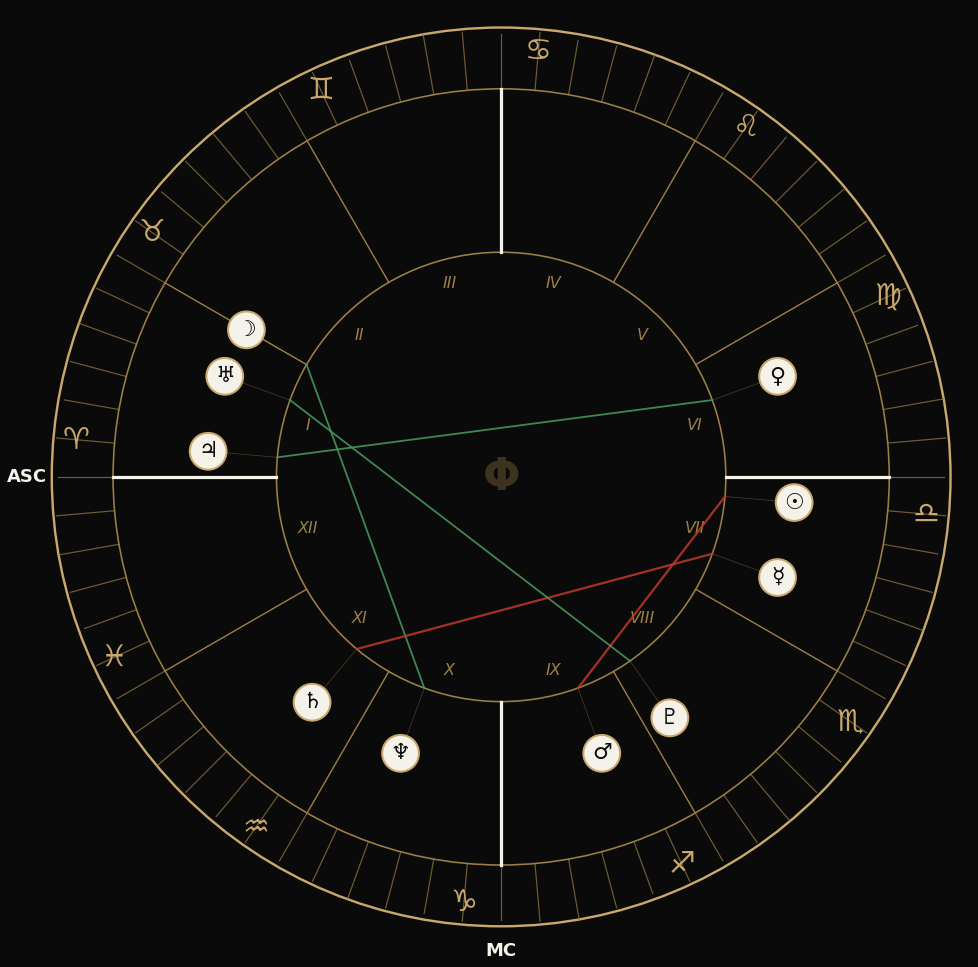
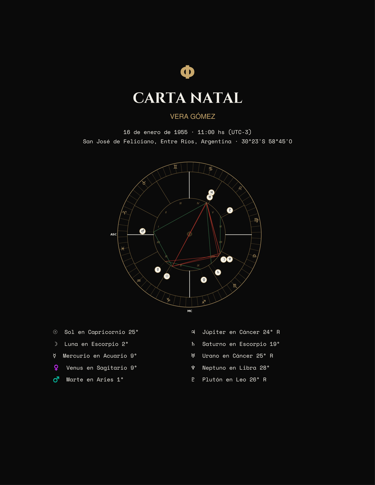
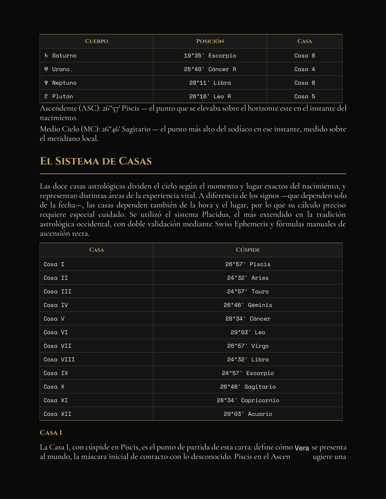
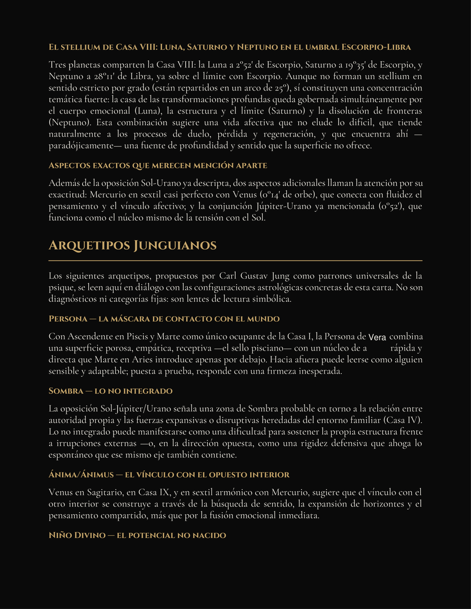
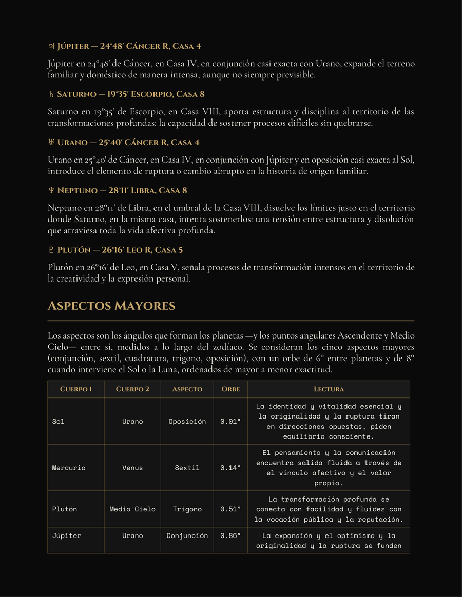
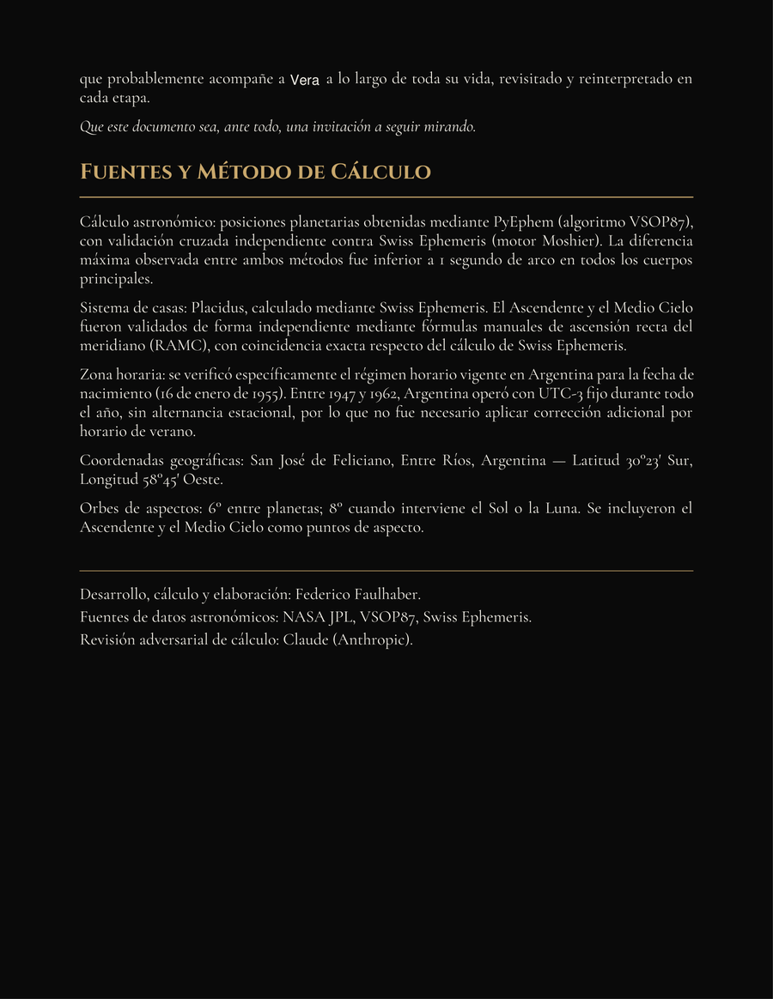

Cartas natales calculadas con precisión astronómica real.
Mirá cómo son nuestras cartasDetrás de PHI
Cálculo y desarrollo: Federico Faulhaber - L.U.X. · Colaboración en desarrollo: Lucila Sánchez Peña · Metodología: Sinergia X
Fuentes de datos: JPL / NASA (efemérides planetarias) · Validación cruzada de la metodología: Claude (Anthropic) y otros modelos de IA — usados como herramientas de research, nunca como generadores del contenido astrológico.
El servicio
Cada carta PHI se calcula desde cero, con efemérides astronómicas reales — no se arma a partir de una plantilla ni de un texto genérico. Las posiciones de los diez cuerpos se obtienen mediante VSOP87, el mismo modelo planetario usado en astronomía de precisión, procesado con PyEphem y validado de forma cruzada con Swiss Ephemeris. El Ascendente y el Medio Cielo se derivan por fórmulas de ascensión recta, y las doce casas se calculan con el sistema Placidus mediante iteración numérica del arco diurno y nocturno.
El resultado es un documento de diez secciones, con estética propia en negro, dorado y crema, que incluye un análisis de arquetipos junguianos — la sección que distingue a PHI de cualquier informe genérico.
| Motor de cálculo | VSOP87 · PyEphem |
| Validación cruzada | Swiss Ephemeris |
| Sistema de casas | Placidus (iterativo) |
| Orbe de aspectos | 6° · 8° si interviene Sol/Luna |
| Secciones del informe | 10 |
| Formato de entrega | PDF + DOCX |
| Versión mobile incluida | Sí |
| Diferencial | Arquetipos junguianos |
Un vistazo más profundo
Carl Jung propuso que la psique no es un territorio en blanco: está poblada por patrones universales —arquetipos— que se repiten en mitos, sueños y símbolos de todas las culturas. La astrología, entendida como lenguaje simbólico y no como predicción literal, ofrece un mapa particularmente preciso para leer esos patrones: cada planeta, signo y casa funciona como una coordenada dentro de esa geografía interior.
En PHI, la sección de arquetipos toma tu configuración planetaria real —no una plantilla genérica— y la cruza con este marco. No es una lista de rasgos sueltos: es una lectura que busca mostrarte qué patrón estás repitiendo, en qué área de tu vida, y por qué nombrarlo cambia la forma en que lo vivís.
La máscara social, la versión de vos que mostrás para funcionar en el mundo. Necesaria y funcional — el problema aparece cuando se confunde con la identidad completa y ahoga todo lo que queda por debajo.
ASCENDENTE · CASA 10Todo lo que quedó afuera de la imagen que tenés de vos mismo: impulsos, deseos y reacciones que reprimiste porque no encajaban. No es "lo malo" — es lo no vivido. Cuanto más se ignora, más se proyecta en los demás.
CASA 8 · PLUTÓN · ASPECTOS DUROSLa parte complementaria de la psique: lo receptivo y lo emocional en un hombre, lo estructurante y asertivo en una mujer, según el modelo original de Jung. Se activa en los vínculos que más te desestabilizan.
LUNA · VENUS · CASA 7El potencial original, anterior al condicionamiento: la capacidad de asombro y el don que traías antes de aprender a esconderlo. En la carta aparece donde hay talento sin desarrollar, más que carencia.
CASA 5 · JÚPITERLa capacidad de leer la propia experiencia como aprendizaje en vez de como castigo. Es el arquetipo que Saturno suele activar en los tránsitos más duros: no te da lo que querés, te da lo que te falta entender.
SATURNO · CASA 9El centro organizador de toda la psique, ni consciente ni inconsciente sino la totalidad de ambos. Jung lo consideraba la meta del proceso de individuación: no eliminar la Sombra, sino integrarla.
SOL · EJE DE NODOSCómo funciona
Nos das fecha, hora exacta y lugar de nacimiento. La precisión del horario es lo que determina el Ascendente y las cúspides de las casas.
Se calculan las posiciones planetarias reales para ese instante y lugar, el Ascendente, el Medio Cielo y las doce casas con el sistema Placidus.
Se analizan aspectos, stelliums y configuraciones significativas, incluyendo la lectura de arquetipos junguianos propios de PHI.
Recibís tu carta natal completa en PDF y DOCX, en versión de escritorio y de celular, con la estética negro, dorado y crema que identifica a PHI.
Por qué PHI
Cada posición planetaria surge de un modelo de efemérides, no de asociaciones de lenguaje. Los grados que ves son los grados reales del cielo ese día, con doble verificación entre dos motores de cálculo independientes.
Las cúspides se resuelven por iteración numérica del arco semidiurno y nocturno, no por aproximación ni tabla genérica. El Ascendente y el Medio Cielo se validan además con fórmulas manuales.
Una sección propia que conecta tu configuración natal con los arquetipos de Jung — un nivel de lectura que no aparece en informes automáticos ni en la astrología de aplicación de celular.

Rueda zodiacal · ejemplo ilustrativo
Mirá el resultado
Este es un fragmento real de una carta PHI entregada, con el nombre cambiado por uno de fantasía para proteger la identidad de quien la pidió. Los cálculos, aspectos y estructura son exactamente los que recibe cada cliente.

Portada

Posiciones planetarias · sistema de casas

Arquetipos junguianos

Aspectos mayores

Cierre
Vamos a ir sumando más ejemplos de cartas entregadas.
Quién está detrás
PHI nace de la sinergia entre Federico Faulhaber y Lucila Sánchez Peña — cálculo astronómico real, lectura simbólica honesta, sin atajos.
Lo miramos desde varios ángulos: los arquetipos junguianos, y una curiosidad genuina por las fronteras abiertas de la física teórica. Ninguno de los dos reemplaza al cálculo — lo acompañan.
Si querés conocernos más, escribinos por privado.
Federico Faulhaber — cálculo y desarrollo
Lucila Sánchez Peña — colaboración y metodología (Sinergia X)
Con datos y validación de:
NASA JPL · Swiss Ephemeris — datos astronómicos y efemérides
Claude (Anthropic), Grok, GPT y DeepSeek — revisión adversarial y control de calidad
Preguntas frecuentes
Pedí la tuya
Escribinos con tu fecha, hora y lugar de nacimiento. Te confirmamos por el mismo medio y coordinamos la entrega.
Escribir por mail$ — ARS · consultar
Para ubicarte
PHI no es tarot, no es adivinación y no promete decirte el futuro. Es una perspectiva —astrología simbólica cruzada con arquetipos junguianos y astronomía real— sobre cómo cada persona percibe y organiza su realidad. Funciona como una herramienta de lectura simbólica, no como un oráculo.
Eso significa que el valor de la carta no está en "acertar": está en la utilidad. Si te ayuda a nombrar un patrón, a entender una repetición, a mirar una zona de tu vida con otro lenguaje, cumplió su función. Si no te resuena, también es información válida — no todo lenguaje simbólico le sirve a todo el mundo, y eso está bien.
La metodología es de Federico Faulhaber - L.U.X., desarrollada en colaboración con Lucila Sánchez Peña y el marco de Sinergia X. Los cálculos astronómicos se apoyan en datos de JPL/NASA, y el proceso de investigación se validó cruzando múltiples modelos de inteligencia artificial —entre ellos Claude, de Anthropic— usados como herramientas de research y control, nunca como autores del contenido.